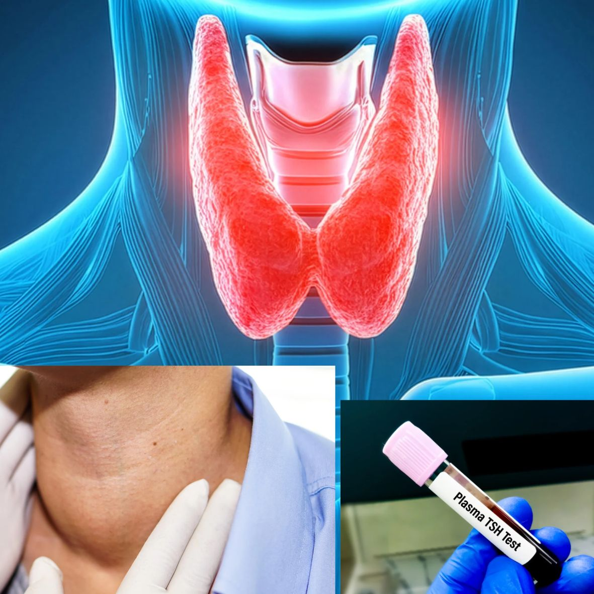

Thyroid Disorders: What Everyone Should Know About an Underactive and Overactive Thyroid
The thyroid is a small butterfly-shaped gland at the front of your neck that sets the pace of your metabolism. When it makes too little or too much hormone, almost every organ in the body feels it.
What Does the Thyroid Do?
The thyroid sits low in the front of the neck, just below the Adam's apple and wrapped around the windpipe. It has two lobes joined by a thin bridge of tissue, which gives it its butterfly shape. A healthy thyroid is usually too small to see or feel.
Its job is to make thyroid hormones, mainly thyroxine (T4) and a smaller amount of the more active triiodothyronine (T3). To do this it needs iodine, a mineral we get from food such as fish, seafood, eggs, dairy and iodised salt.
These hormones travel in the blood to almost every cell, where they set the speed at which the body uses energy. They help control:
- Heart rate and blood pressure: how fast and how strongly the heart beats
- Body temperature: how well you tolerate cold and heat
- Weight and appetite: how quickly you burn calories
- Digestion: how fast food moves through the gut
- Mood, memory and energy: how alert, calm or low you feel
- Skin, hair and nails: how they grow and renew
- Periods and fertility: the regularity of the menstrual cycle
- Growth and brain development: especially in babies and children
The thyroid does not work alone. The pituitary gland, at the base of the brain, releases thyroid-stimulating hormone (TSH), which tells the thyroid how much hormone to make. When thyroid hormone levels fall, TSH rises to push the gland harder. When they rise, TSH falls to slow it down. This feedback loop is why a TSH blood test is the best first check of thyroid health.
Hypothyroidism: When the Thyroid Is Underactive
Hypothyroidism means the thyroid does not make enough hormone, so the body's systems slow down. It is much more common in women than in men and becomes more frequent with age, though it can occur at any age, including in newborns.
Common causes
- Hashimoto's thyroiditis: an autoimmune condition in which the body's own defences damage the gland. It is the most common cause in places where iodine intake is adequate.
- Treatment of an overactive thyroid: radioactive iodine, anti-thyroid drugs taken too long, or thyroid surgery
- Thyroid surgery for nodules, goitre or cancer
- Iodine deficiency: still the leading cause worldwide where diets lack iodine
- Some medicines, such as lithium and amiodarone
- Pregnancy-related thyroid problems after childbirth (postpartum thyroiditis)
Symptoms
Symptoms come on slowly, often over months or years, and are easy to mistake for tiredness or ageing:
- Constant tiredness and sleepiness
- Weight gain despite no change in eating
- Feeling cold when others are comfortable
- Constipation
- Dry skin, brittle nails, hair thinning or hair loss
- Puffy face, hoarse voice
- Muscle aches and joint stiffness
- Slow heart rate
- Low mood, poor concentration and forgetfulness
- Heavy or irregular periods
- A swelling at the front of the neck (goitre)
Diagnosis
A blood test is all that is needed to start. In hypothyroidism the TSH is high and the free T4 is low. If the TSH is raised but the T4 is still normal, this is called subclinical hypothyroidism, and your doctor will decide whether it needs treatment or just monitoring. Antibodies against the thyroid (anti-TPO) can confirm Hashimoto's thyroiditis.
Treatment
Hypothyroidism is very treatable. The standard treatment is a daily tablet of levothyroxine, a synthetic version of T4. It is usually taken on an empty stomach, in the morning, 30 to 60 minutes before breakfast, and kept apart from iron and calcium supplements. The dose is adjusted by blood tests every few months at first, then once a year once stable. Most people need treatment for life, and most feel completely well on the right dose.
If untreated, hypothyroidism can raise cholesterol, strain the heart, cause problems in pregnancy and, in rare severe cases, lead to a life-threatening state called myxoedema coma.
Hyperthyroidism: When the Thyroid Is Overactive
Hyperthyroidism means the thyroid makes too much hormone, so the body's systems speed up. It also affects women more often than men and is usually diagnosed between the ages of 20 and 50, although it can appear later in life.
Common causes
- Graves' disease: an autoimmune condition in which antibodies stimulate the thyroid to overwork. It is the most common cause and can also affect the eyes.
- Toxic nodular goitre: one or more thyroid nodules that make hormone on their own, more common in older adults
- Thyroiditis: inflammation of the gland that leaks stored hormone into the blood for a few weeks to months, often followed by a low phase
- Too much iodine or thyroid medicine, including some contrast dyes, supplements and amiodarone
Symptoms
- Racing or irregular heartbeat, palpitations
- Weight loss despite a normal or increased appetite
- Feeling hot, sweating a lot, heat intolerance
- Anxiety, irritability, restlessness and trouble sleeping
- Trembling hands
- Frequent bowel movements or diarrhoea
- Muscle weakness, especially in the thighs and upper arms
- Light or infrequent periods
- A swelling at the front of the neck (goitre)
- In Graves' disease: bulging, gritty or red eyes, and sometimes thickened skin over the shins
In older adults the picture can be quieter, with weight loss, tiredness and an irregular heartbeat (atrial fibrillation) being the only clues.
Diagnosis
Blood tests show a low TSH with a high free T4 and/or T3. Your doctor may then request thyroid antibodies, an ultrasound of the neck, or a thyroid scan to find the cause, since the best treatment depends on it.
Treatment
There are three main options, and the choice depends on the cause, your age, other health conditions and whether you are pregnant or planning pregnancy:
- Anti-thyroid tablets (such as carbimazole or propylthiouracil) reduce hormone production. They are often tried first, usually for 12 to 18 months in Graves' disease, and need regular blood monitoring.
- Radioactive iodine is a single treatment that shrinks the overactive thyroid tissue. It often leads to an underactive thyroid afterwards, which is then treated with levothyroxine.
- Surgery to remove all or part of the gland is considered for large goitres, suspicious nodules or when other treatments are unsuitable.
Beta-blocker tablets are commonly used in the first weeks to calm palpitations and tremor while the other treatment takes effect.
Left untreated, hyperthyroidism can cause an irregular heart rhythm, weak bones (osteoporosis) and heart failure. Very rarely it can trigger a thyroid storm, a medical emergency with high fever, a very fast pulse and confusion.
Getting Tested and When to See a Doctor
Thyroid problems are diagnosed with a simple blood test, usually a TSH measurement, as in the blood tube pictured at the top of this article. No fasting is needed. If the TSH is abnormal, your doctor will add free T4 (and sometimes T3) to confirm the diagnosis. A doctor may also gently feel your neck for swelling or lumps, and may order an ultrasound if a nodule or goitre is found.
In short, the usual patterns are:
- Normal thyroid: TSH normal, free T4 normal
- Hypothyroidism (underactive): TSH high, free T4 low
- Subclinical hypothyroidism (mild or early underactivity): TSH high, free T4 normal
- Hyperthyroidism (overactive): TSH low, free T4 high
- Subclinical hyperthyroidism (mild or early overactivity): TSH low, free T4 normal
See your doctor if you have
- Several of the symptoms described above that last more than a few weeks
- A lump, swelling or visible fullness at the front of your neck, or difficulty swallowing or breathing
- A family history of thyroid disease, or another autoimmune condition such as type 1 diabetes
- Plans for pregnancy, or you are already pregnant and have thyroid symptoms. Untreated thyroid disease can affect both mother and baby, so it is worth checking early.
Go to an emergency department urgently if you have a very fast heartbeat with high fever, severe agitation or confusion, or if you have known thyroid disease and become extremely drowsy, cold and slow.
The Bottom Line
Most thyroid disorders are easy to diagnose and can be controlled well with treatment. If you suspect a thyroid problem, do not diagnose or treat yourself and do not stop or change your medication on your own: a simple blood test will tell you where you stand.
Tired all the time, unexplained weight change, or a swelling in your neck? Message directly and ask.
Message on WhatsAppThis article is general health information and does not replace a medical consultation. In a medical emergency, call SAMU (114) or go to your nearest hospital.